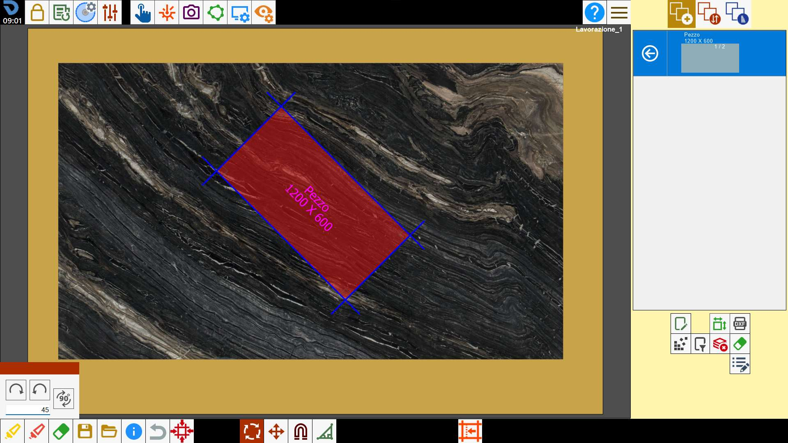
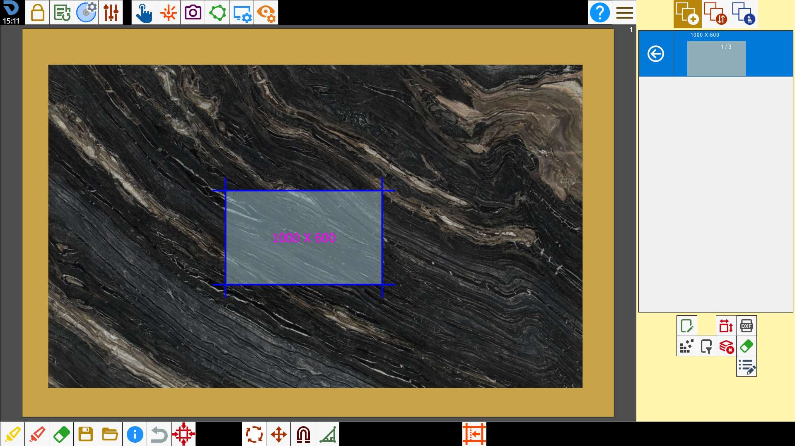

Der Bediener kann die Positionierung der Werkstücke auf dem Arbeitstisch durch direkte Interaktion im Arbeitsbereich ändern.

Funktionen
 | Mehrfachauswahl |
 | Alles auswählen |
 | Werkstücke entfernen |
Werkstücke bewegen | |
 | Werkstücke drehen |
Vorgang rückgängig machen | |
 | Werkstücke magnetisch ausrichten |
 | Gehrungsschnitt |
 | Werkstück-Offset ändern |
Werkstücke auswählen
Um ein Werkstück auszuwählen, in dessen Inneres drücken. Der Hintergrund der Werkstücke ist hellblau, wenn sie nicht ausgewählt sind, und rot, wenn sie ausgewählt sind.

Mehrfachauswahl
Durch Drücken der Schaltfläche wird der Mehrfachauswahlmodus aktiviert. In diesem Modus können mehrere Werkstücke gleichzeitig ausgewählt werden. Um ein Werkstück abzuwählen, in einen bereits ausgewählten Umfang drücken.

Alle Werkstücke auswählen
Mit dieser Schaltfläche können alle im Arbeitsbereich vorhandenen Werkstücke gleichzeitig ausgewählt oder abgewählt werden.

Werkstücke entfernen
Durch Drücken der Schaltfläche werden die ausgewählten Werkstücke aus dem Arbeitsbereich entfernt und wieder in die Werkstückliste eingefügt, sodass sie später erneut verfügbar sind.

Werkstücke verschieben
Um das ausgewählte Werkstück zu verschieben, innerhalb des Umfangs gedrückt halten und es im Arbeitsbereich ziehen.
Alternativ kann das Bedienfeld zum Verschieben mit Richtungspfeilen verwendet werden.

Diese Funktion wird auf alle ausgewählten Werkstücke angewendet. Daher können mehrere Werkstücke gleichzeitig verschoben werden.
Schaltflächen
 | Richtungspfeile |
 | Verschiebung entlang der Seitenachse |
Werkstücke entlang der Standardachsen bewegen
Das Werkstück soll um 1500 mm nach links verschoben werden.


Werkstücke entlang der Seitenachse bewegen
Das Werkstück soll relativ zur Achse seiner Seite um 1500 mm nach links verschoben werden.
Dazu muss die entsprechende Schaltfläche aktiviert sein.


Werkstücke drehen
Um die ausgewählten Werkstücke zu drehen, außerhalb des Umfangs gedrückt halten und sie im Arbeitsbereich ziehen.
Alternativ kann das Bedienfeld zur Drehung um festgelegte Winkel verwendet werden.

Diese Funktion wird auf alle ausgewählten Werkstücke angewendet. Daher können mehrere Werkstücke gleichzeitig gedreht werden.
Schaltflächen
 | Drehung im Uhrzeigersinn |
 | Drehung gegen den Uhrzeigersinn |
 | Drehung 90_ |
Drehung anwenden
Auf das Werkstück soll eine Drehung um 45 Grad im Uhrzeigersinn angewendet werden.


Vorgang rückgängig machen
Diese Funktion dient zum Rückgängigmachen des zuletzt ausgeführten Vorgangs.
Wenn der Bediener beispielsweise versehentlich ein Werkstück löscht, kann er durch Drücken dieser Schaltfläche zum Zustand vor dem Löschen zurückkehren.
Es gibt keinen Verlauf der vorgenommenen Änderungen; durch mehrmaliges Drücken der Schaltfläche können jedoch mehrere Vorgänge rückgängig gemacht werden.

